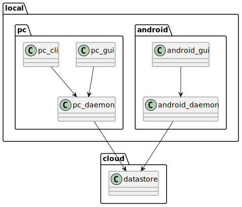
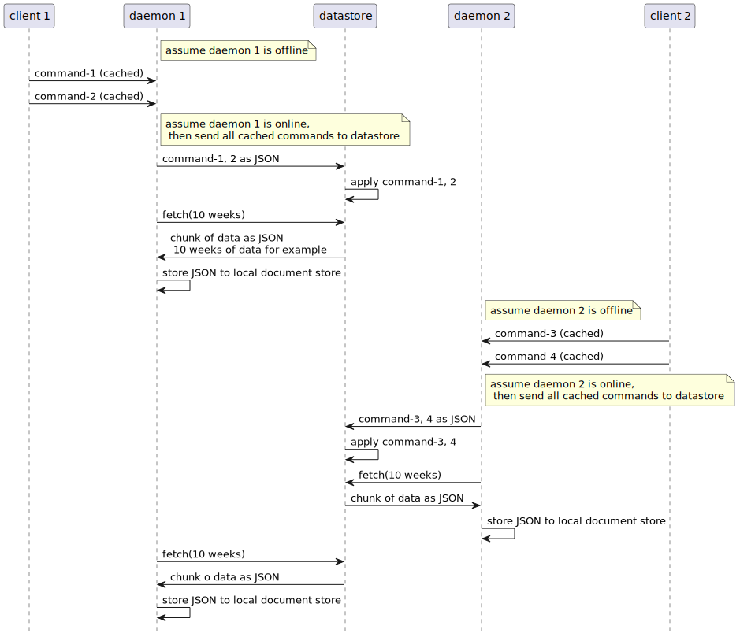
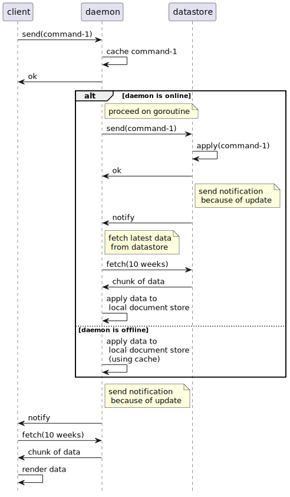
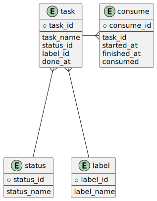
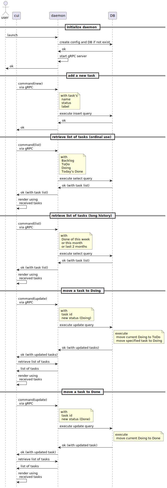

Table of contents
Summary
hashira Design overview
Functions of hashira on PC
CLI and GUI
- Add a new task and place it on Backlog
- Change status of tasks to ToDo, Doing, and Done
- Add interrupter task, place it on Doing directory
- Show list of tasks on each status
GUI specific
- Show chart to indicate how long time spent to current task
Functions of hashira on Android
Application
- Add a new task and place it on Backlog
- Change status of tasks to ToDo, Doing, and Done
- Add interrupter task, place it on Doing directory
- Show list of tasks on each status
Widget
- Add a new task and place it on Backlog
- Show list of tasks on Backlog
- Show current task and how long time spent to the task
Functions of Daemon
- It is for making hashira work even there's no network
- Daemon has database to cache the tasks and "commands"
- "commands" means a unit of modifications to tasks. e.g) Add new task, move task to ToDo, and so on
- "commands" are used to sync with datastore
- If network is available, then sync registered or changed tasks with cloud
Functions of datastore
- It is assumed to place on cloud. it is for syncing data between devices
- It accepts "commands" to add or modify tasks
- Daemon can retrieve chunk of commands with from-to query to reflect datastore's update to local database
Modules

Communication
- Use GRPC for communication between front and daemon
- Use GRPC for communication between daemon and datastore
Communication between front to daemon
Overview
- hashira uses GRPC for communication between front and daemon
PC
CLI and Daemon
- CLI to Daemon
- Add a new task to Backlog
- Change task's status
- Show task list
- Daemon to CLI
- None
GUI and Daemon
-
Assume to use Electron
-
GUI to daemon
- Add a new task to Backlog, ToDo, Doing, Done
- Change task's status
- Show task list on each status
- Show consume of each task
-
Daemon to GUI
- notify any update of tasks
-
TODO: Show GUI picture
Android
application and daemon
-
GUI to Daemon
- Add a new task to Backlog, ToDo, Doing, Done
- Change task's status
- Show task list on each status
- Show consume of each task
-
Daemon to GUI
- Notify any update of tasks
-
TODO: Show GUI picture
Widget and Daemon
-
Widget to Daemon
- Add a new task to Backlog
- Change task's status to Done
- Show task list
-
Daemon to widget
- Notify any update of tasks
-
TODO: Show GUI picture
Communication between daemon to datastore
Overview
- Use GRPC for communication between daemon and datastore
- Daemon send array of command, and datastore will apply them
- Daemon retrieves updates from datastore periodically for syncing
GRPC APIs
- Use Hashira service. See daemon overview.
Overview of Daemon's functionality
- Daemon has responsibility for
- Receive requests from front end.
- Caches commands and reflect them to local document store for working without network.
- Send chunk of commands to datastore for syncing.
- Receive chunk of data to sync with datastore.
Caches data entities on local document store
- Caches commands and reflect them to local document store for working without network.
- here is data entities for local document store
Sync with datastore
- Daemon has a document store to cache commands from front end, and store data from datastore.
- Periodically, daemon tries to perform syncing local data with datastore.
- Send local commands, that are "not synced yet", to datastore.
- Retrieve chunk of data. They are JSON formatted and represent "1 week of data", for example.
- Daemon stores 10 weeks of data in local document store.

GRPC API
-
Hashira Service
- send(array of command)
- sends specified commands.
- retrieve(from, to (number of weeks)) array of task
- returns array of task with specified term.
- send(array of command)
-
command and related enumeration
what (enum)
| enum | remarks |
|---|---|
| new | create a new task |
| update | update state of a task |
command (structure)
| field | type | remarks |
|---|---|---|
| what | enum of what | new, update, etc. |
| payload | string | JSON formatted string how to treat what. |
Command handling
-
When daemon receives commands, cache them and return ok immediately.
-
If daemon is online, send cached commands to datastore.
-
When datastore receives commands and succeed to apply them, datastore sends notification to daemon.
-
At daemon receiving notification, retrieve chunk of data from datastore for syncing.
-
When daemon succeed to apply them, daemon sends notification to front end.
-
At front end receiving notification, retrieve chunk of data from daemon.
-
When front end succeed to retrieve chunk of data, render them.
-
If daemon is offline, postpone to send commands to datastore.
- Instead, daemon applies the cached commands to local document store, and send notification to front end as same as written above.

Data entities for local document store
-
Two data entities are declared for local document store.
- Tasks
- Priorities
-
Refer proto file for latest data entity declaration.
Tasks
- Tasks represents each ToDo items.
message Task {
string id = 1;
string name = 2;
Place place = 3;
bool isDeleted = 4;
}
Priorities
- Priorities represents priority of each task.
- Priorities are represented as its place and array of task ID.
- The ID placed on lower index means higher priority.
message Priority {
Place place = 1;
repeated string ids = 2;
}
Database tables
User
| column | type | remarks |
|---|---|---|
| user_id | number | primary key, non-null, unique |
| user_name | string | non-null, unique |
| password | string | non-null |
Task
| column | type | remarks |
|---|---|---|
| task_id | number | primary key, non-null, unique |
| task_name | string | non-null |
| user_id | number | non-null |
| status_id | number | non-null |
| label_id | number | non-null |
| done_at | time | non-null |
- task represents tasks and its status.
Status
| column | type | remarks |
|---|---|---|
| status_id | number | primary key, non-null, unique |
| status_name | string | non-null, unique |
- status represents task's status. like "Backlog", "ToDo", "Doing" and "Done" will be inserted here.
Consume
| column | type | remarks |
|---|---|---|
| consume_id | number | primary key, non-null, unique |
| task_id | number | non-null |
| started_at | time | non-null |
| finished_at | time | non-null |
| consumed | time | non-null |
- consume represents how many times are consumed for specified task.
Label
| column | type | remarks |
|---|---|---|
| label_id | number | primary key, non-null, unique |
| label_name | string | non-null |
- label represents task's label. this is used to task classification.
ER diagram

Prototype
Here's design memorandum of hashira prototyping, for checking usability.
Feature notice of prototype version
- No performance/resource consideration
- front end is for linux PC only
- CUI and GUI (may use astilectron)
- No cloud syncing
- No "Doing" time calculation
- Daemon uses MySQL as DB
Sequence of tweaking tasks
